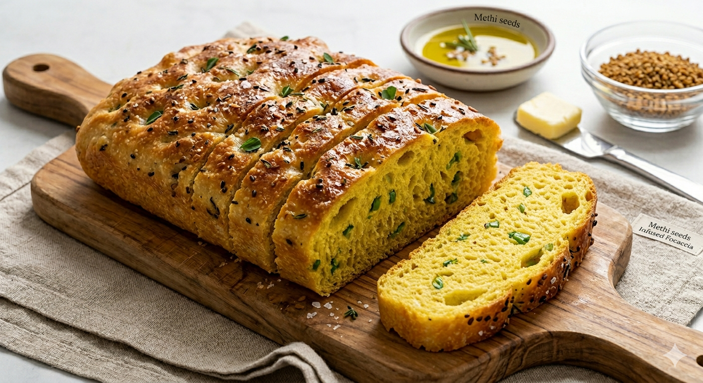

Fusion Bread Diary
Methi Thepla Focaccia
Bakery-style focaccia made with maida, Talod thepla flour, kasuri methi, sesame, and a glossy olive-oil finish. It is soft and airy inside, crisp underneath, and full of gentle Gujarati-spiced flavor.
9×13
base pan
1x
recipe
airy
texture

Add your food photo here
Save it as photos/recipe/thepla_focaccia.jpg
Scale the Recipe
Change the pan size or number of pans. Ingredients update automatically from the base 9×13 pan.
Ingredients
Method
1. Prep the methi
Soak kasuri methi in warm water for 5–10 minutes. Drain, squeeze lightly. Skip the step if using fresh Methi. Sauté in olive oil for 1–2 minutes along with green chillies and hing. Cool completely.
2. Mix the dough
Combine warm water, sugar, and yeast. Add maida, thepla flour, yogurt, olive oil, and cooled methi mix. Stir into a sticky, wet dough. It should not feel like roti dough.
3. Stretch & fold
Rest 20 minutes, then stretch and fold. Repeat 2–3 times every 20 minutes to build structure without kneading.
4. Cold ferment
Cover and refrigerate 16–24 hours. This creates better flavor, better texture, and a more airy crumb.
5. Pan & proof
Generously oil the tray. Transfer dough gently and let it spread naturally. Rest at room temperature for 2–3 hours until bubbly, jiggly, and airy.
6. Dimple & top
Oil your fingers and make deep dimples. Add olive oil or garlic oil, sesame seeds, and a light pinch of flaky salt.
7. Bake
Bake at 220°C, or 200°C fan, for 20–25 minutes. Look for a golden top, crispy edges, and a well-risen structure.
8. Finish hot
Brush immediately with garlic methi oil or butter + chaat masala while the bread is still hot.
Texture Checklist
- • Dough jiggles when you shake the tray
- • You see visible air bubbles
- • Dough spreads without tearing
- • Top is golden and base is crisp
Fixes
- • Too tight: add 1 tbsp water
- • Too loose: rest longer; do not add flour
- • Not rising: give more room-temp time
- • Pale bottom: bake a little longer
Diary Note
This is a favorite fusion experiment: the methi adds warmth, the thepla mix adds spice, and the cold ferment keeps the texture truly focaccia-like.